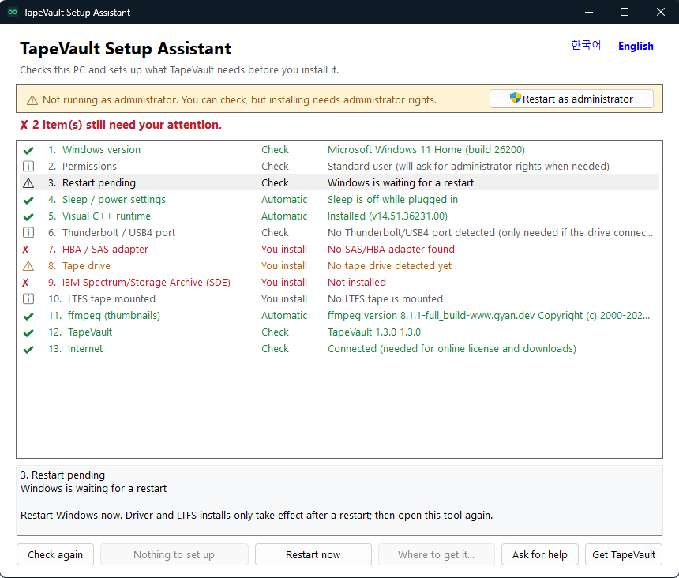

Before installing TapeVault, make sure your system meets the following requirements.
You don't have to check each requirement by hand. Run the TapeVault Install Assistant and it shows this PC's setup as 13 items in working order on one screen. It runs without installation.

- What the marks mean — ✓ ready · ⚠ needs a look · ✗ required and missing. The number of items still needed is shown at the top
- What it checks — Windows version, pending restart, sleep settings, Visual C++ runtime, Thunderbolt port, SAS adapter, tape drive, IBM LTFS SDE, mounted LTFS tape, ffmpeg, TapeVault, internet
- Set up for you — ffmpeg, the Visual C++ runtime and turning sleep off are done with one button (administrator rights needed)
- You install — for vendor software such as the adapter driver, tape driver and IBM SDE, Where to get it shows the official address and the exact file name to download
- Ask for help — if you get stuck, enter your email and send the results straight to support from the tool; you get a ticket number
- When everything is ready, Get TapeVault takes you to Step 2
Download the latest installer from the Download section of this website. Do not use copies from other sites.
⬇ Download TapeVault for WindowsRun the downloaded TapeVault-Setup-<version>.exe file and follow the steps below.
- Double-click the installer file to launch the setup wizard
- Accept the License Agreement and click Next
- Choose installation folder (default:
C:\Program Files\TapeVault) - Shortcuts are created on the Desktop and in the Start Menu
- Click Install and wait for completion (~2 minutes)
- Click Finish — TapeVault will launch automatically
To use LTO tape on Windows you need three things: ① the driver for your SAS HBA (adapter), ② the tape driver for your LTO drive, and ③ IBM LTFS SDE (IBM Spectrum/Storage Archive Single Drive Edition). The Install Assistant in Step 1 checks which of these are missing and tells you where to get them.
If the drive is not detected, check the drivers in this order:
- Open Device Manager (Win + X → Device Manager)
- Look for your LTO drive under Tape drives or Other devices
- Right-click → Update driver → Search automatically
- If not found, download the driver from your drive manufacturer's website
- If IBM LTFS SDE is not installed, download it from IBM and install it — Windows needs it to read and write LTFS tapes
Launch TapeVault from the Desktop shortcut or Start Menu. The license screen appears first (Step 6). Once activated, TapeVault finds your connected LTO drive automatically.

- Insert an LTO tape into your drive
- Click + New Tape to format and register a new tape
- Create a folder in the tree and drag your footage folder onto it to register the files
- Add the files to the write queue and click ▶ Start writing
TapeVault is activated with your account — the same email and password you use on this website. Registering starts a 1-month trial with full features; after that, buy a license on the purchase page (Korean cards) or contact sales.
2. New user: open the Register tab and enter your email and password
3. If you receive a verification email, click the link in it
4. Sign in on the Sign in tab — internet required for this step
5. ✓ Activated — after buying a license, sign in again or restart the app to apply it
When you register video files, TapeVault uses FFmpeg to create thumbnails and read video details (duration, resolution, codec). Once created, you can browse by thumbnail even when the tape is on the shelf. FFmpeg is a free, open-source multimedia framework. It is not bundled with TapeVault — install it separately and make sure it is on your system PATH.
There is no in-app installer. Install FFmpeg once; the zip file can also be copied to an offline PC:
- Download FFmpeg from ffmpeg.org/download.html → Windows builds → ffmpeg-release-essentials.zip
- Extract the zip file to a folder, e.g.
C:\ffmpeg - Add the
binfolder (e.g.C:\ffmpeg\bin) to the system PATH: Win + R →sysdm.cpl→ Advanced → Environment Variables → Path → New - Open a new Command Prompt and run
ffmpeg -versionto confirm - Restart TapeVault — thumbnail generation is now active
Install FFmpeg with Homebrew, then restart TapeVault:
- Run
brew install ffmpegin Terminal - Check with
ffmpeg -version, then restart TapeVault
TapeVault for macOS needs LTFS and macFUSE on the Mac. The Install Assistant (see the macOS note in Step 1) checks your Mac and installs macFUSE, open-source LTFS and ffmpeg through Homebrew.
- Download the .dmg for your Mac from the Download section (Apple Silicon or Intel — separate files)
- Open the .dmg and drag TapeVault into Applications
- Run the Install Assistant and install what it reports as missing (macFUSE, LTFS, ffmpeg). macOS may ask you to allow macFUSE under System Settings → Privacy & Security
- Install the driver for your SAS / Thunderbolt adapter (for example ATTO) from the manufacturer's website — the assistant only tells you where to get it
- First launch: open TapeVault from Applications and click Open when macOS asks to confirm an app downloaded from the internet. If it does not open, allow it under System Settings → Privacy & Security → Open Anyway
You can remove TapeVault at any time. Uninstalling the app does not erase or change any data written to your LTO tapes, and your license stays on your account — sign in again after reinstalling to use it.
Windows
- Close TapeVault first
- Open Settings → Apps → Installed apps, find TapeVault, click ··· (More) → Uninstall (on Windows 10: Settings → Apps → TapeVault → Uninstall). Control Panel → Programs and Features also works
- The uninstaller removes the program files and the Desktop / Start Menu shortcuts
macOS
- Quit TapeVault (TapeVault menu → Quit)
- In Finder, open Applications and drag TapeVault to the Trash, then empty the Trash
- macFUSE, LTFS and ffmpeg added by the Install Assistant are separate programs and stay installed. Remove them only if no other software uses them — for example
brew uninstall ffmpeg, and macFUSE with its own uninstaller
- Make sure the LTO drive is powered on and connected before launching TapeVault
- Check Device Manager — the drive should appear under Tape drives
- Try a different SAS/USB port or cable
- Reinstall the tape driver from your drive manufacturer
- Click Refresh in TapeVault's top bar to re-scan
- Right-click the installer → Run as Administrator
- If your antivirus quarantines the installer, first check that it is signed by VETERAN IT (right-click the file → Properties → Digital Signatures). Do not turn protection off — add an exclusion for the installer or contact support
- Make sure you have at least 500 MB of free disk space
- Download the installer again — the file may be corrupted
- Make sure you have an active internet connection during activation
- Check your email and password, and make sure you clicked the verification link in the email you received when registering
- The number of computers you can register depends on your license. If you see "This license is not registered to this PC", turn on the network adapter (Ethernet or Wi‑Fi) that was on when you activated and restart the app; if it continues, contact support
- On a PC without internet, use the Offline tab: send the Machine ID to support@tapevault.net and load the .tvlic file you receive